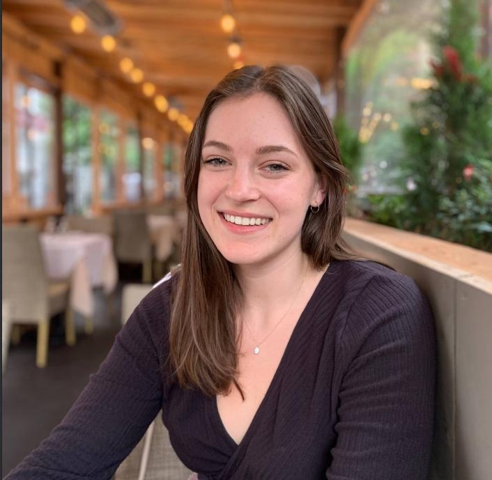

Hi! I'm Sydney.
This website is a catch-all for things I'm writing, projects I've been working on, and
other miscellaneous stuff. You can read a little about my philosophy for building a personal website
here.
past
I studied math, economics and philosophy at the University of Arizona, where
I was also awarded a FLAS Fellowship for advanced study in Arabic.
Before starting college I spent a year working on organic farms around the northeastern U.S.
My first job out of college was in a macro-finance research group at the Federal Reserve Bank of New York,
and before that I interned at NASA Langley Research Center for a year.
present
I'm currently working as a researcher at a
hedge fund. I'm interested in markets,
effective altruism, and improving the long-term future.
future
things I think about a lot:
market microstructure (a.k.a. how the rules of markets, especially financial markets,
impact participant behavior)
progress studies (a.k.a. what are the conditions under which technological progress happens and
how can we replicate them)
effective altruism (a.k.a. what do we value most and how can we maximize that value)
how capital markets interact with economic growth and technological progress
overly systematic ways of enjoying things like food and perfume